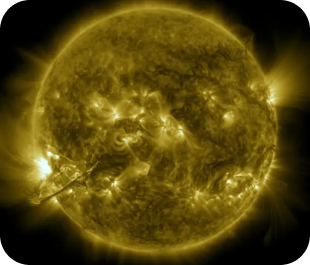
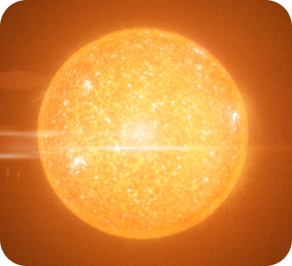
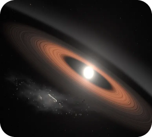
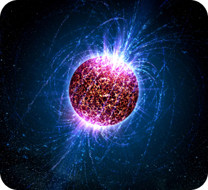
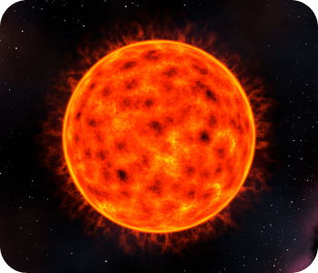

Types stars
The universe is filled with an astonishing diversity of stars, each possessing unique characteristics that set them apart from one another. Stars vary widely in terms of their brightness, size, color, and behavior. Some types change into others very quickly, while others stay relatively unchanged over trillions of years.
Main Sequence Stars
A normal star forms from dust and gas in a stellar nursery, gaining mass and heating up over hundreds of thousands of years. When its core reaches millions of degrees, nuclear fusion begins as hydrogen nuclei merge into helium, releasing energy that counters gravity. Such stars, known as main sequence stars, make up about 90% of all stars. They vary in size, color, and luminosity, with lifespans ranging from millions to billions of years.
When a main sequence star under eight solar masses exhausts core hydrogen, it collapses due to gravity, raising temperature and pressure. Helium fusion into carbon releases energy, causing hydrogen fusion to expand the outer layers, forming a red giant. These red giants often appear orange. They become unstable, pulsate, and eject their atmospheres, ultimately dispersing their outer layers as a planetary nebula. Our Sun will become a red giant in about 5 billion years.
Red Giants
White Dwarfs
When a red giant sheds its outer layers, it leaves behind a white dwarf core, typically Earth-sized but far more massive. A teaspoon of their material can outweigh a pickup truck. White dwarfs cool over billions of years, occasionally emitting visible light from blue to red. Some host dusty disks and planetary remnants from their red giant past. In about 10 billion years, our Sun will also transform into a white dwarf following its red giant phase.
A neutron star forms when a main sequence star with between about eight and 20 times the Sun’s mass runs out of hydrogen in its core. The star initially fuses helium into carbon, then converts carbon into heavier elements like neon, oxygen, silicon, and finally iron, releasing energy that prevents core collapse. However, as it reaches iron fusion, the star runs out of fuel, leading to a rapid core collapse, rebound, and a powerful supernova explosion. The remnant core is a superdense neutron star.
Neutron Stars
Pulsars
these are a type of rapidly rotating neutron star. As they rotate, the spots spin in and out of view like the beams of a lighthouse. Some pulsars spin faster than blender blades.
Magnetars
All neutron stars have strong magnetic fields. But a magnetar’s can be 10 trillion times stronger than a refrigerator magnet’s and up to a thousand times stronger than a typical neutron star’s.
Red Dwarfs
Red dwarfs, the smallest main sequence stars, are cooler and often appear orange in color. They maintain a constant fusion process that allows them to burn through their hydrogen supply for trillions of years without significant structural changes. Some low-mass red dwarfs, just a third of the Sun's mass, may have lifespans exceeding the current age of the universe, up to about 14 trillion years. Red dwarfs are abundant and make up roughly 75% of the Milky Way's stellar population.
Brown dwarfs aren’t technically stars. They’re more massive than planets but not quite as massive as stars. Generally, they have between 13 and 80 times the mass of Jupiter. They emit almost no visible light, but scientists have seen a few in infrared light. Some brown dwarfs form the same way as main sequence stars, from gas and dust clumps in nebulae, but they never gain enough mass to do fusion on the scale of a main sequence star. Others may form like planets, from disks of gas and dust around stars.